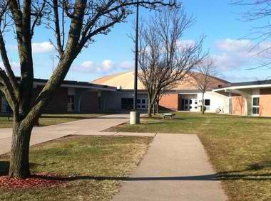

|

Welcome to my website. I am Keerthana Madhavan. I was born and raised in small town in Southern India called Chennai, Tamilnadu. I have an twin sister whose name (pretty similar to mine making us more twining) Keerthika Madhavan. Then it's my litle brother Rajesh and Mom and Dad. So we are a family of five, now currently residing in Michigan, USA. Throughout, my 18 years of life, I travelled (in a sense of moving around places because of my Dad's job) to a lot places and studied there. I did my early schooling in India, part of middle school in Mississauga, Ontario and Windsor, Ontario and in India as well. Then I suprisingly completed high school at one place (my favorite of all) HERITAGE HIGH SCHOOL in Saginaw, Michagan. Now, I am currently in Windsor, Ontario pursuing my dream educaion in Computer Science with software engineering. (I have always wanted to be a software engineer from childhood)

As I stated early, I have always wanted to be a software engineer, or something related to Computers because I can solve problems on my own!!!! I love to solve problems and be creative when doing it. None of my family members or relatives are in the computer field. So, I wanted to do something in this field and succeed, and eventually become A FEMALE SOFTWARE ENGINEER, the first in my family. My first year at UWindsor was awesome, and I am looking foward to complete my next three years faster. After, I get my Bacherlor's, my future plan is to start my own software solutions company ( some place in need of technology advancement), like a law firm. If possible, get my masters, and eventually, doctoral in the computer science field.
One of my other life-time goal is to create a chain service centers for senior citizens around the world. Over the past few years, I've lost my grandparents and I feel like we didn't take care of them as good enough( I mean provide valuable time rather than money), and I've noticed this is the case in many places. I want to create a place where senior citizens don't have to feel unwanted or as an barrier. As an avid technology fancier, I hope to fill my future service center with tech-filled objects and humanity to entertain our senior citizens. This is me!!!! Full of dreams, hope and ambition...... Explore the webpage to know more about me. :)
|